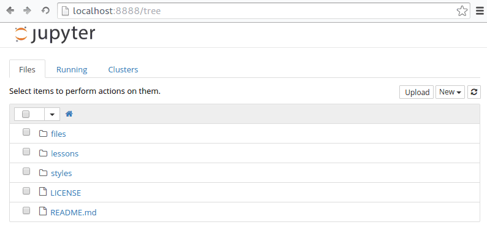

Getting started on Using Jupyter Notebooks and Python¶
Learning Objectives¶
The goal of this notebook is to learn how to use Python for solving chemical engineering problems. We assume that you are familiar with content from APSC 160 (or any other introductory programming courses if you are a transfer student), but have no prior experience with Python.
By the end of this section, you should be able to:
- Understand how to use Jupyter notebooks
- Write simple Markdown and Python code
Introduction and Motivation¶
Welcome to CHBE 241: Material and Energy Balances!
In this course, we will use Jupyter notebooks to illustrate how to apply modern, open-source software tools for chemical engineering applications. We will be using Python, a free, open-source and powerful computing environment. It is one of the most popular languages in the data science community alongside R, which you will learn in STAT 241.
Coding is one of the most useful, transfereable skills that you can learn in the 21st century. According to the U.S. Department of Labor, the chemical engineering industry is projected to grow 2% between 2014-2024. Over the same period, the software industry is projected to grow by a staggering 17%. Software, automation and data science will serve an increasingly important role in the field of chemical engineering. For example, researchers in the DAIS Lab here in CHBE are investigating applications of machine learning techniques to design better controllers for industrial processes.
The goal of using Python in this course is to provide you with a gentle introduction to the language of modern software development and equip you with the necessary foundations to pursue further explore this area if you are interested in learning more.
Running Jupyter Notebooks¶
Jupyter notebooks are documents that combines Python code, text, equations and images. These notebooks are meant to be accessed through a browser. They are easily shareable and downloadable into other file types (e.g. PDF and HTML) for your convenience.
To interact with and edit these notebooks, you will need to open them using a Jupyter server. In this course, we will use a Jupyter server hosted by UBC at https://ubc.syzygy.ca/.
Running Jupyter on the Cloud: Syzygy¶
- Go to the Syzygy server in the link above
- Sign in to Syzygy with your CWL login
- Click “Start My Server” and the Jupyter interface will open
- Go to File > New > Python3 and create a new file 
- Enter this into the box
!git clone https://github.com/UBCEnvision/CHBE241and press “Shift+Enter” - Go to File > Open and you should see the course syllabus downloaded into a folder called CHBE241
Using Jupyter¶
A notebook consists of cells that contain either text or code. Cells that contain text are known as Markdown cells, and they can support formatted text, images, HTML and equations written in $ :raw-latex:`LaTeX `$. To swtich between Markdown and code in each cell, use the dropdown menu at the top of the page.
Let’s take a few minutes to familiarize ourselves with Jupyter. The Jupyter interface is very user-friendly and the best way to learn is to explore by clicking on different buttons. Try doing the following:
- Take a look at the course materials and observe the different folders and files
- Create a new Python 3 notebook
- Rename the notebook and save it
Jupyter notebooks have a ``.ipynb`` extension with a notebook icon beside the filename.
Edit Mode and Command Mode¶
There are 2 modes in Jupyter notebooks: edit mode and command mode.
Edit mode is indicated by a green cell border and a prompt showing in the editor area:

Edit Mode
When a cell is in edit mode, you can type into the cell, like a normal
text editor. Enter edit mode by pressing Enter or using the mouse to
double click on a cell.
Command mode is indicated by a grey cell border with a blue left margin:

Edit Mode
When you are in command mode you will be able to perform operations on
cells like copy, paste and delete but not type into individual cells.
Enter command mode by pressing Esc.
Here are some of the shortcuts available in command mode:
| Command Mode Action | Shortcut |
|---|---|
| Insert empty cell above | a |
| Insert empty cell below | b |
| Copy cell | c |
| Cut cell | x |
| Paste cell below | v |
| To code | y |
| To markdown | m |
| Save and checkpoint | s |
Python Code¶
We will start with some basic variable assignment and printing in Python. Create a new notebook, enter edit mode then write this in the cell:
x = 3
and then hit Shift+Enter.
Make sure you use Shift+Enter. If you just hit Enter you’ll find that it will simply add another line to the current cell. In this new cell, we can print out the value using:
print(x)
and then hit Shift+Enter. The output of that command is printed immediately below the cell.
The whole procedure should look something like this:
runandprint
Overwriting variables¶
Since each cell is interacting with the same Python instance, if we give
x a new value and then enter print(x) we’ll get that new value.
That’s pretty straight forward —but what if we then delete the cell
where we gave x a new value?
Let’s take a look!
overwrite
Even though we deleted the cell where we assigned x = 7, the
assignment is still valid. In fact, the assignment will remain valid
until we explicitly execute a cell that sets x equal to a new value, or
until we completely restart this Jupyter Notebook instance.
If you move cells around or execute them in a nosequential order, you might confuse yourself (and others). To start again and clear things up, use the button or the Kernel menu to clear outputs and restart the kernel, then choose “Run All” from the Cell menu.
Basic Arithmetic¶
Python can easily perform basic arithmetic operations.
Using Python is as simple as \(1+1\):
In [11]:
1+1
Out[11]:
2
You can also assign numbers to variables:
In [1]:
x = 3
y = 4
print ("x + y = ", x + y)
print ("x * y = ", x*y)
print ("x ^ y = ", x**y )
print ("x / y = ", x/y)
x + y = 7
x * y = 12
x ^ y = 81
x / y = 0.75
Numpy¶
More advanced functions require a numerical computation library called Numpy (numerical Py). We will be using this library in almost every notebook.
When using functions in the numpy library, you must first import the library using the following command:
import numpy as np
In the code above, numpy is the name of the library that we are
importing. np is just the name of a variable that we are assigning
the library to. Assigning a variable is optional and just a matter of
convenience. It makes our code look cleaner and easier to type if the
name of the library is long.
For example, here’s how to print the value of \(\cos(\pi)\) and
\(\sin\big(\frac{\pi}{2}\big)\) using numpy:
In [10]:
import numpy as np
x = np.pi
print (np.cos(x))
print (np.sin(0.5*x))
-1.0
1.0
Markdown Math¶
Markdown can be used to render nice \(\LaTeX\)-styled equations. For example, here’s the Thiele modulus written in \(\LaTeX\): \(\Phi=\frac{R}{3}\sqrt{\frac{V_\text{M}}{K_M\cdot D_eff}}\).
To write equations in Markdown, first make sure you change your cell type to Markdown instead of Code.
- For inline math, wrap LaTeX inside single dollar signs:
$...$ - For single-line rendering, wrap LaTeX inside double dollar signs:
$$...$$
For example:
$$
f'(a) = \lim_{x \to a} \frac{f(x) - f(a)}{x - a}
$$
Would render as:
Using Lists¶
Lists are a very useful way of organizing data in Python. If you can recall from APSC160, an array is a collection of similar data elements. Lists in Python are very similar to arrays in C.
Here are some examples:
In [13]:
my_numbers = [2, 4, 6, 8]
print(my_numbers)
[2, 4, 6, 8]
Concatenation is combing two lists together. This is done by using ``+`` operation.
In [14]:
a = [2, 4, 6, 8]
b = [10, 12, 14]
print(a + b)
[2, 4, 6, 8, 10, 12, 14]
To sum elements in your list, you can do:
np.sum(list)
In [15]:
print(np.sum(a + b))
56
For loops¶
For loops can also be used in Python to iterate over a list. For loops
work by first typing for, then the variable or list your iterating
over, then in, then the length or list that you want to iterate
until. A colon, : is used to signify the start of the for loop and
everything that is in the for loop needs to be indented using the
TAB key.
Here are two examples that will take numbers from a list and print out
the square of those numbers. You might be familiar with the ^ symbol
as the power operator. In Python, we use ** as the power operator.
To get the square of two, we would write 2**2.
Example 1:
In [24]:
a = [2, 4, 5, 6, 8]
for i in a:
print("a =", i, "a^2 =", i**2)
a = 2 a^2 = 4
a = 4 a^2 = 16
a = 5 a^2 = 25
a = 6 a^2 = 36
a = 8 a^2 = 64
Example 2:
In [76]:
b = [10, 12, 14]
for i in b:
print("b =", i, "b^2 =", i**2)
b = 10 b^2 = 100
b = 12 b^2 = 144
b = 14 b^2 = 196
As you can see in both examples, i iterated through a in the
first example and b in the second example.
List Comprehension¶
In Python, instead of writing a for loop, we can also use List Comprehension as a shortcut to perform operations on elements in a list. Click on the link to find out more.
Here’s an example of using list comprehension to square the numbers in a list:
a_squared = [x**2 for x in a]
Let’s break it down into 2 parts, we’ll start with the second half of the statement:
for x in a
means that we are taking each element in the list a, and assigning
it to x
In the first half of the statement, we tell Python what we want to do
with x:
x**2
would square the number in x.
In [23]:
# Using list comprehension to square numbers in list a
a_squared = [x**2 for x in a]
print(a_squared)
[4, 16, 36, 64]
In [26]:
# Using list comprehension to return only even numbers in list a
a_squared = [x for x in a if (x % 2 == 0)]
print(a_squared)
[2, 4, 6, 8]
Using Dictionaries¶
Just like lists, dictionaries are another type of useful data structure in Python. They work by having key-value pairs. It is common to have the key as a string and numbers as the values. Dictionaries are useful for storing and retrieving data.
A key is something we can use to lookup values of interest. For example, in an actual dictionary, a key would be an unfamiliar word that we are interested in looking up, and the value would be the dictionary entry explaining the meaning of the word.
Just like an actual dictionary, where no words are repeated, keys are always unique in Python dictionaries.
Here is an example of atoms and the number of protons associated with
that atom. The keys are the element names as a string, the values are
the proton numbers, and our dictionary is called number_of_protons.
In [3]:
number_of_protons = {'Pb' : 72,'H' : 1, 'F' : 9,'C' : 6, 'Fe' : 26}
print(number_of_protons)
{'Pb': 72, 'H': 1, 'F': 9, 'C': 6, 'Fe': 26}
You may have noticed that we made a mistake with the number of protons that lead has. It should be 82 instead of 72.
Rather than rewriting the whole dictionary, we can change a single key’s value using this syntax:
number_of_protons['key'] = new_value
In [4]:
number_of_protons['Pb'] = 82
print(number_of_protons)
{'Pb': 82, 'H': 1, 'F': 9, 'C': 6, 'Fe': 26}
Now that the dictionary is fixed, let’s add another atom, Radon.
In [22]:
number_of_protons['Rn'] = 86
print(number_of_protons)
{'Pb': 82, 'H': 1, 'F': 9, 'C': 6, 'Fe': 26, 'Rn': 86}
We can easily get all key-value pairs in a dictionary using a for loop.
In [80]:
for atoms in number_of_protons.keys():
print("The number of protons in {:<s} is {:<7.2f}".format(atoms,number_of_protons[atoms]))
The number of protons in Pb is 82.00
The number of protons in H is 1.00
The number of protons in F is 9.00
The number of protons in C is 6.00
The number of protons in Fe is 26.00
The number of protons in Rn is 86.00
Unlike lists, the keys in a dictionary are not sorted or ordered
(Further
Reading for
details). Since the outputed values looks random, we can sort it
alphabetically based on the keys by calling the sorted() function.
sorted(number_of_protons.keys())
In [6]:
for atoms in sorted(number_of_protons.keys()):
print("The number of protons in {:<s} is {:<7.2f}".format(atoms,number_of_protons[atoms]))
The number of protons in C is 6.00
The number of protons in F is 9.00
The number of protons in Fe is 26.00
The number of protons in H is 1.00
The number of protons in Pb is 82.00
Plotting with Python¶
To plot in Python, we need to import the matplotlib.pyplot library.
This alows Python plotting functionality similar to MATLAB. Here are
some examples:
In [6]:
import matplotlib.pyplot as plt
import numpy as np
%matplotlib inline
x = np.linspace(0.01,2)
y = np.exp(x)
z = np.log(x)
plt.plot(x, y, 'b', x, z, 'r')
plt.xlabel('x');
plt.ylabel('f(x)');
plt.title('Plotting e^(x) and ln(x)')
plt.legend(['e^(x)','ln(x)'])
plt.grid()
In [7]:
x = np.linspace(0,np.pi/2)
a = np.sin(x)
b = np.cos(x)
plt.plot(a,b)
plt.axis('equal')
Out[7]:
(-0.050000000000000003, 1.05, -0.049999999999999933, 1.05)
In [8]:
x = np.linspace(0,np.pi)
a = np.sin(x)
b = np.cos(x)
plt.plot(a,b)
plt.axis('equal')
Out[8]:
(-0.049974310810034395,
1.0494605270107222,
-1.1000000000000001,
1.1000000000000001)
In [9]:
x = np.linspace(0,2*np.pi)
a = np.sin(x)
b = np.cos(x)
plt.plot(a,b)
plt.axis('equal')
Out[9]:
(-1.0994348378207568,
1.0994348378207568,
-1.0978426623878532,
1.0998972696375169)
In [11]:
x = np.linspace(0.01,2)
plt.subplot(2,1,1)
plt.plot(x,y)
plt.title('e^(x)')
plt.subplot(2,1,2)
plt.plot(x,z)
plt.title('ln(x)')
plt.tight_layout(pad=0.4, w_pad=0.5, h_pad=1.0)
Solving Equations¶
One of the best features of Python is its massive amounts of libraries to extend its functionallity. Here is an example of solving some algebraic equations using the ``sympy`` library.
In [87]:
import sympy as sym
sym.var('P V n R T');
# Gas constant
R = 8.314 #J/K*mol
#Moles of Helium
n = 2.3 #Moles
#Temperature
T = 293.15 #Kelvin
#Equation
eqn = sym.Eq(P*V,n*R*T)
#Solve for P
f1 = sym.solve(eqn,P)
print(f1[0])
#Solve for V
f2 = sym.solve(eqn,V)
print(f2[0])
#Give value for V
V = 0.121
eqn = sym.Eq(P*V,n*R*T)
#Solve for P again
f3 = sym.solve(eqn,P)
print(f3[0])
5605.67293/V
5605.67293/P
46327.8754545455
Credits¶
This notebook uses material from the following sources: